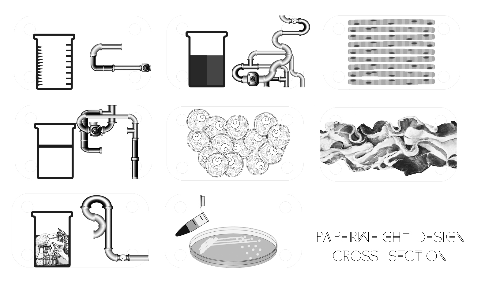
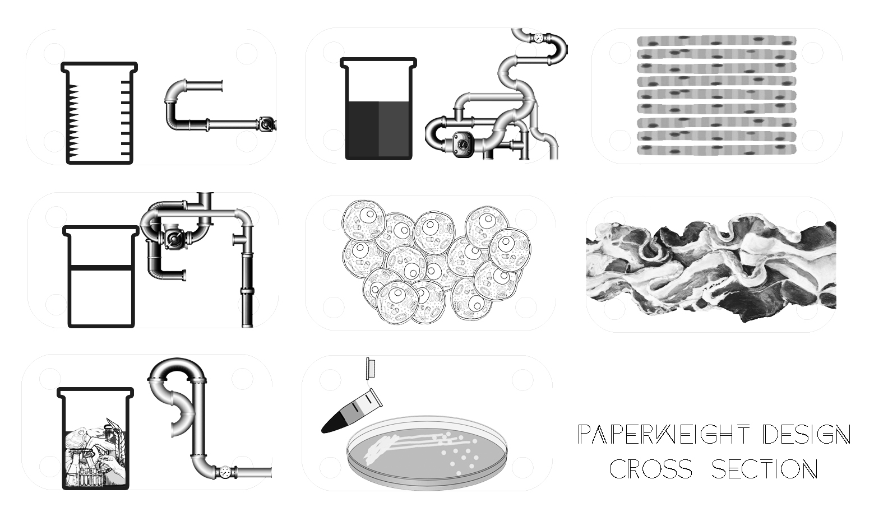
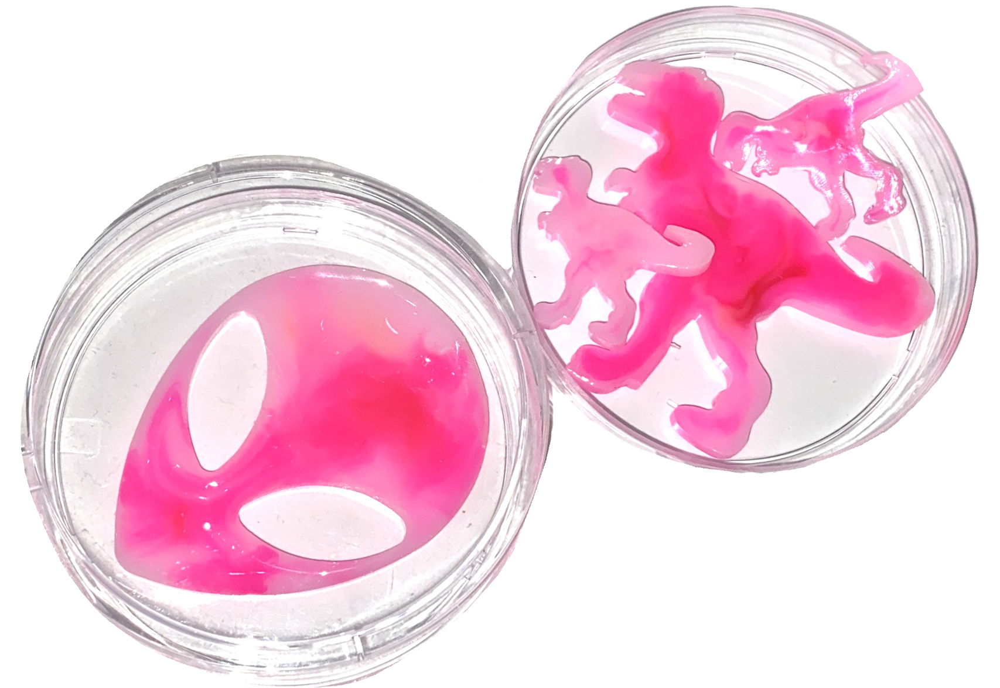
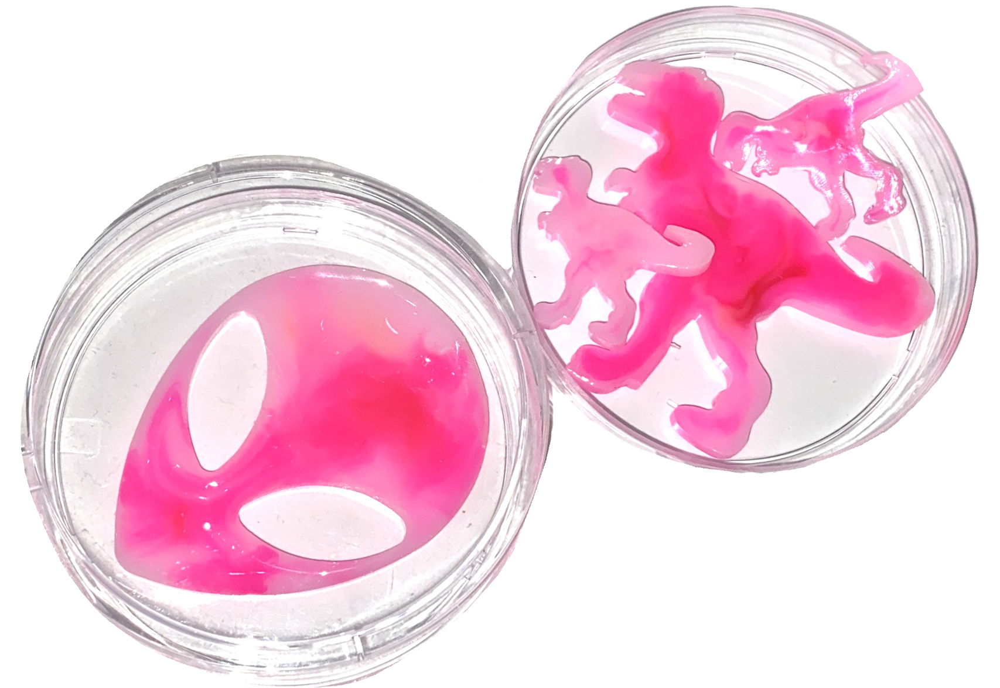

Emerging Future I & II: Cultured Meat
After taking researches and studies on the topic of “cultured meat” in depth, I created a set of 2D and 3D studies of the same topic. Although it is believed that the production of cultured meat is a much more healthier and clean industry than the traditional livestock farming and meat slaughtering system we have now, there is still much more research and prediction needed in order to fully understand how this technology will change / reshape people’s diet structure, shopping experience or living routine in general.
In my project, I took the side of “pro-cultured meat”, which basically means that my design message is to educate and inform the general public about the positivity and advantages of cultured meat. Posters and fashion / home products are made as propagandas for the marketing of cultured meat. I believe it is only powerful and efficient if messages can be embedded into designs for everyday life.

2D Study posters promoting the idea of "Cultured Meat."
A fake research report is created as the project Manifesto.

 


Paperweight mimicking actual glass slides in Bio laboratories. Each layer of the paperweight represents one stage of the cultured meat making process.
In theory, people should be able to grow their own cultured meat at home as easy as growing catnips for their pets. If cultured meat technology keeps evolving, it is safe to predict that one day we will be able to have alien steak and dinosaur meat in the future.
 
